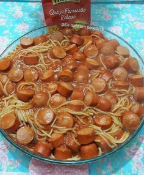

Macarrão com salsicha

Ingredientes
- 500g de macarrão (espaguete ou penne)
- 4 salsichas italianas ou brasileiras
- 1 cebola picada
- 2 dentes de alho picados
- 1 xícara de molho de tomate
- 1/2 xícara de água
- Sal e pimenta a gosto
- Queijo ralado (opcional)
- Salsa picada (opcional)
Modo de preparo
- Cozinhe o macarrão em água fervente até ficar al dente.
- Em uma panela, cozinhe a cebola e o alho até ficarem dourados.
- Adicione as salsichas e cozinhe até ficarem douradas.
- Adicione o molho de tomate e água.
- Misture bem e cozinhe por 5 minutos.
- Escorra o macarrão e misture com o molho de salsicha.
- Tempere com sal e pimenta.
- Sirva quente, com queijo ralado e salsa picada, se desejar.